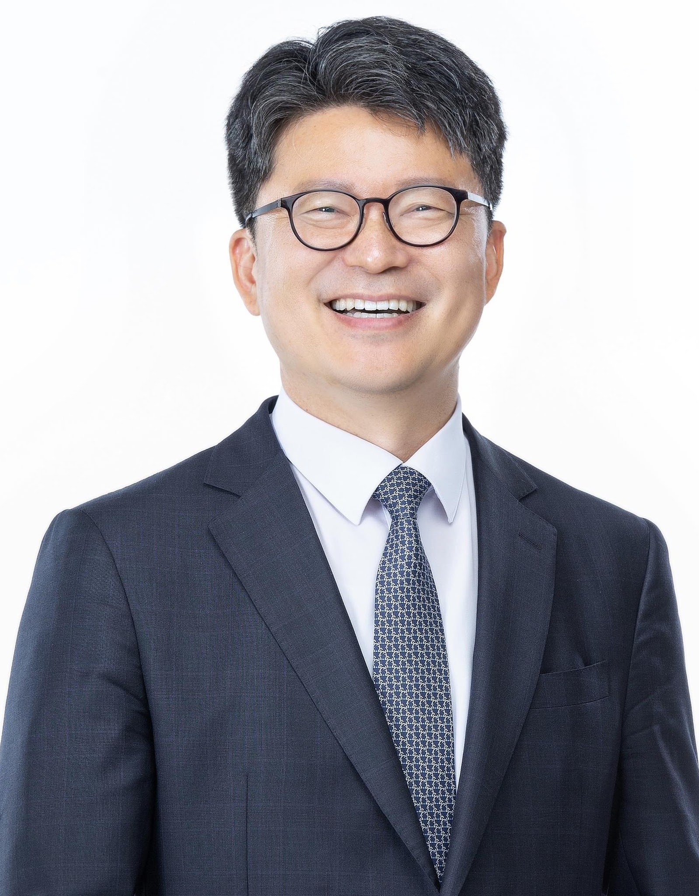
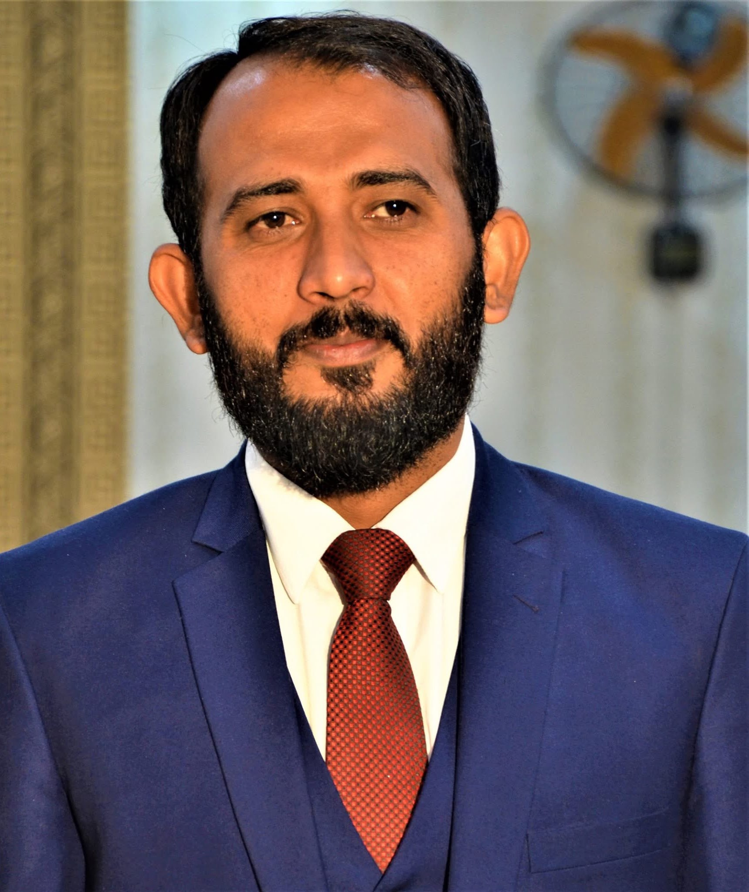
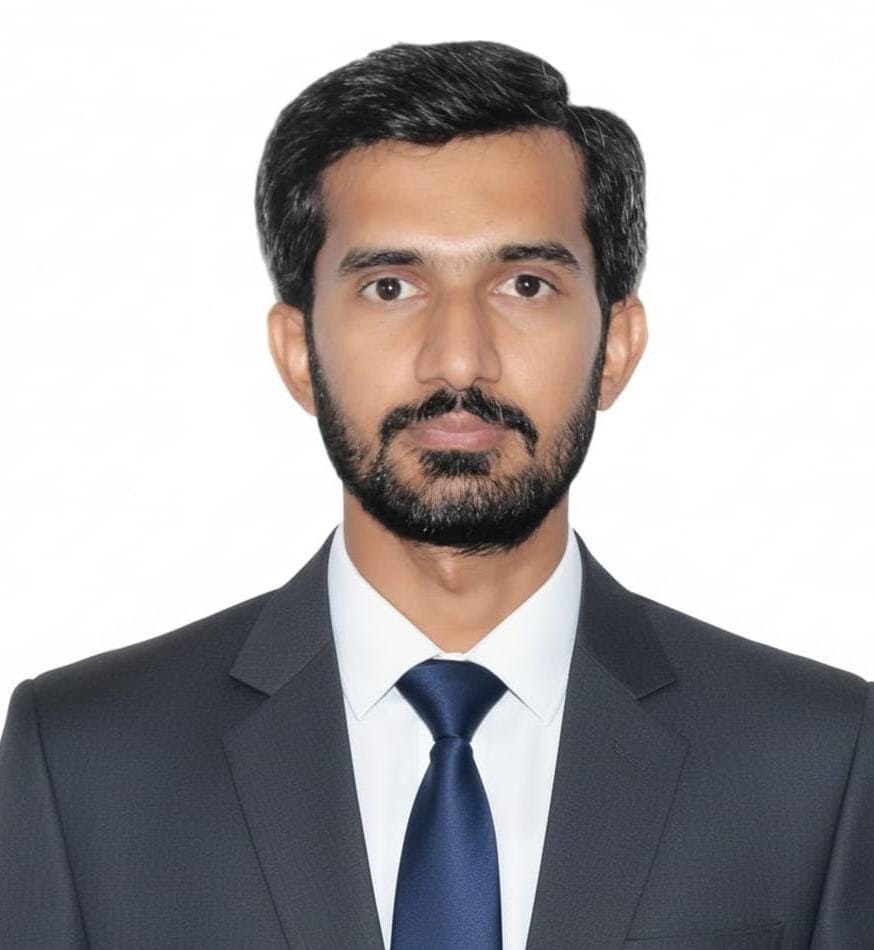
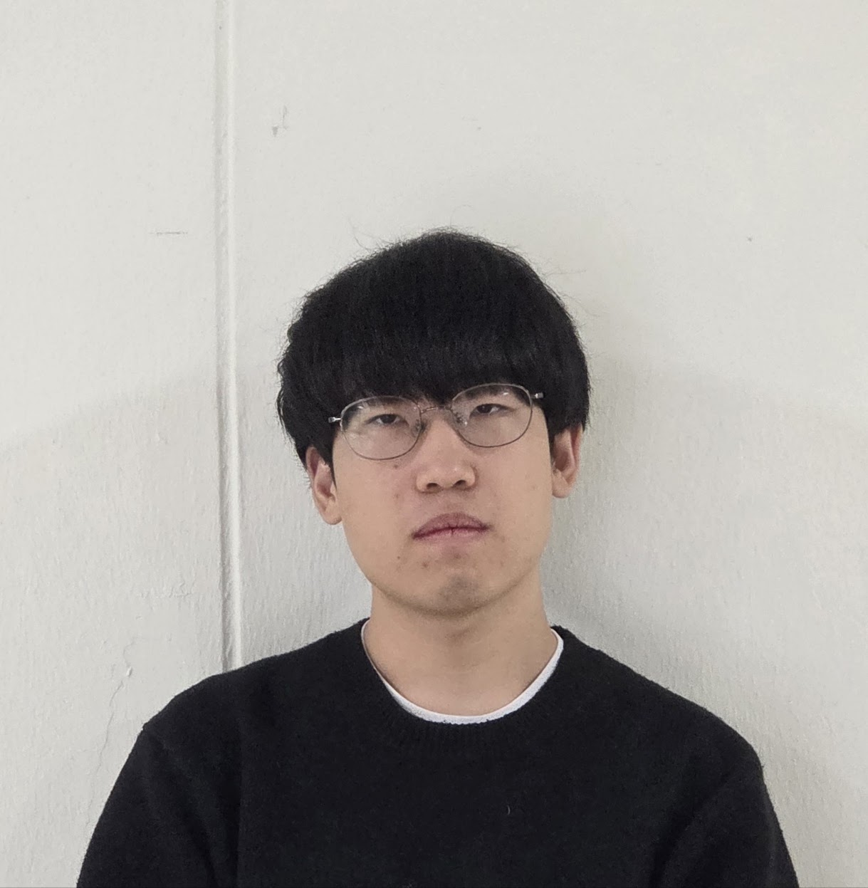

Research Team
Laboratory Members
Meet the professors, senior researchers, and graduate scholars driving innovative environmental modeling, AI water systems, and agricultural water conservation at GNU.

Head of Laboratory • Principal Investigator
Professor Sang Min Kim
Professor, Department of Agricultural Engineering
President, Korean Society of Agricultural Engineers (KSAE)
President, Korean Society of Agricultural Engineers (KSAE)
- Major: Agriculture, Water Resources and Environment
- Email: smkim@gnu.ac.kr
- Phone: 055-772-1931 | Fax: 055-772-1939
- Location: Gyeongsang National University, Jinju, South Korea

Senior Researcher
Dr. Muhammad Waqas
PhD in Environment, Climate Change & Sustainability
Lead AI Hydrology Researcher
Lead AI Hydrology Researcher
- Focus: Deep learning PET, SWAT, climate adaptation, groundwater modeling
- Email: muhammad.waqas@gnu.ac.kr

Graduate Student
Muhammad Bilal Iqbal Awan
Master's Scholar (2026 Cohort)
Agricultural & Watershed Systems
Agricultural & Watershed Systems
- Focus: Hydrological analysis & agro-environmental modeling
- Affiliation: Regional Water Environment System Lab
Undergraduate Student & Developer
Sangbin Ha
Undergraduate Student (Bachelor's Program, 2020 Cohort)
Software Developer, K-Water Guard AI
Software Developer, K-Water Guard AI
- Focus: Automated data collection pipelines & dashboard software architecture
- Affiliation: Regional Water Environment System Lab

Undergraduate Researcher
Jin Won Park
Bachelor's Program
Water Resources & Environmental Systems
Water Resources & Environmental Systems
- Focus: Water quality observation & watershed field data processing
- Affiliation: Regional Water Environment System Lab